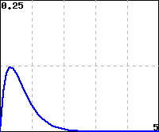

Section 9.2 The Idea of a Line Integral
Motivating Questions
What is an oriented curve and how can we represent one algebraically?
What is the meaning of the line integral of a vector-valued function along a curve and how can we estimate if its value is positive, negative, or zero?
What are important properties of the line integral of a vector-valued functions along a curve?
As we discussed in Section 9.1, vector fields are often useful as representations of forces such as gravity, wind, and flowing water. We learned in [cross-reference to target(s) "S-9-3-Dot-Product" missing or not unique] that the dot product of a force vector and a displacement vector tells us how much work the force did on the object as it moved from the tail of its displacement vector to the tip. However, things get more complicated when an object's movement is not in a straight line and when the force is not uniform throughout the area in which the object moves. For example, how much work is done by a wind of 30 mi⁄h toward the northwest on an airplane that's flying 500 mi due north? What if the wind gets weaker the farther north the plane gets? In this section, we begin investigating how integration can be used to calculate the work a force field does in such circumstances.
Preview Activity 9.2.1.
Recall from [cross-reference to target(s) "S-9-3-Dot-Product" missing or not unique] that the work done by a force \(\vF\) on an object that moves with displacement vector \(\vv\) is \(\vF\cdot \vv\text{.}\) In this Preview Activity, we consider the work done by a wind blowing due east at 45 mi⁄h on an airplane at various stages of its journey.
(a)
A pilot flies for an hour and finds that he is 300 mi from where he started at a heading of 20 ° degrees east of due north. Find the work the wind has done on the airplane during the flight.
(b)
An hour later, the pilot determines that he is 275 mi due north of where he previously checked his position. Find the work done by the wind on the airplane during the second hour of the flight.
(c)
Find the pilot's displacement from his original position after two hours of flying and use that to find the work done by the wind on the airplane during the first two hours of flight.
(d)
How does your answer to the previous part connect to the answers to the first two parts?
(e)
Suppose that the pilot then flies 45 ° west of due north for 200 mi. Find the work done by the wind on the airplane during this part of the journey.
Subsection 9.2.1 Orientations of Curves
Given our motivation for calculating the work that a force field does on an object as it moves through the field, it is natural to concern ourselves with how the object moves. In particular, in many circumstances it will be different if an object moves from the point \((0,1)\) to the point \((4,3)\) by first going up the \(y\)-axis to \((0,3)\) and then moving horizontally to \((4,3)\) than if the object moves along the line segment from \((0,1)\) directly to \((4,3)\text{.}\) Similarly, given a fixed force field, we would expect the work done to be different (in fact, opposite) if the object moves from \((4,3)\) to \((0,1)\) directly along a line segment. We say that a curve in \(\R^2\) or \(\R^3\) is oriented if we have specified the direction of travel along the curve. When a curve is given parametrically (including as a vector-valued function), our convention will be that the orientation follows from the smallest allowable value of the parameter to the largest.
Activity 9.2.2.
For each curve below, find a parametrization of the curve. Ensure that each curve's orientation matches the one specified.
(a)
The line segment in \(\R^3\) from \((0,1,-2)\) to \((3,-1,2)\text{.}\)
(b)
The line segment in \(\R^3\) from \((3,-1,2)\) to \((0,1,-2)\text{.}\)
(c)
The circle of radius \(3\) (in \(\R^2\)) centered at the origin, beginning at the point \((0,-3)\) and proceeding clockwise around the circle.
(d)
In \(\R^2\text{,}\) the portion of the parabola \(y^2 = x\) from the point \((4,2)\) to the point \((1,-1)\text{.}\)
Notice that there are, in general, many ways to parametrize an oriented curve. With line segments, it is common to have the parameter range from \(0\) to \(1\text{,}\) although there are sometimes good reasons to choose another method. For circles and ellipses, you may find it useful to interchange the placement of \(\cos(t)\) and \(\sin(t)\) to change the orientation, but then careful attention may need to be paid to the start and end points. The interactive graphing applet below allows you to plot parametric curves. Click the “Animate” button to trace out the curve from your lower value of \(t\) to your upper value of \(t\text{.}\) (Type enter/return on your keyboard to update the graph after editing a text box.) For curves in \(\R^2\text{,}\) check the “Restrict view to 2D” for ease of viewing.
Subsection 9.2.2 Line Integrals
Just as when we differentiated a vector-valued function \(\vr(t)\) to find a tangent vector, we begin by dividing a curve \(C\) oriented from a point \(P\) to a point \(Q\) into \(n\) small, straight pieces. Each of these pieces is in an area where the vector field \(\vF\) is nearly constant, provided we use enough pieces. In Figure 9.2.2, we show this situation. Each \(\vr_i\) is the tip of a vector that traces out the curve, which makes the vectors \(\Delta\vr_i = \vr_{i+1}-\vr_i\) (shown in blue) approximate the curve \(C\text{.}\) The green vectors are the vectors in the vector field \(\vF\) at each of the designated points along the curve.
If we are trying to determine how much a wind current helps or hinders an aircraft flying along a path determined by the curve, then calculating the dot product \(\vF(\vr_i)\cdot \Delta\vr_i\) makes sense for the local amount of help or hindrance. This is because if the vector \(\vr_i\) along the curve and the force field vector \(\vF(\vr_i)\) point in similar directions, the dot product will be positive. 1  On the other hand, if the angle between them is obtuse, the dot product will be negative and we also would note that the force field is hindering the aircraft's progress. Taking the sum over \(i=0,\dots,n-1\text{,}\) we have a Riemann sum that approximates the work done by the vector field on the aircraft as it flies along \(C\text{:}\)
This suggests the following definition.
Definition 9.2.3.
Let \(C\) be an oriented curve and \(\vF\) a vector field defined in a region containing \(C\text{.}\) The line integral of \(\vF\) along \(C\) is
provided the limit exists.
The limit in Definition 9.2.3 exists provided that \(\vF\) is a continuous vector field, by which we mean that each component function of \(\vF\) is continuous as a function of \(2\) or \(3\) variables, and that \(C\) is a piecewise smooth curved traced out from its initial point to its terminal point without retracing any portion of the curve.
Because the dot products in the definition of the line integral \(\int_C\vF\cdot d\vr\) can each be viewed as the work done by \(\vF\) as an object moves along the (very small) vector \(\Delta\vr_i\text{,}\) the line integral gives the total work done by the vector field on an object that moves along \(C\) (in the direction of its orientation).
Activity 9.2.3.
Shown in Figure 9.2.4 are two vector fields, \(\vF\) and \(\vG\) and four oriented curves, as labeled in the plots. For each of the line integrals below, determine if its value should be positive, negative, or zero. Do this by thinking about if the vector field is helping or hindering a particle moving along the oriented curve, rather than by doing calculations.
(a)
\(\displaystyle\int_{C_1}\vF\cdot d\vr\)
(b)
\(\displaystyle\int_{C_2}\vF\cdot d\vr\)
(c)
\(\displaystyle\int_{C_3}\vG\cdot d\vr\)
(d)
\(\displaystyle\int_{C_4}\vG\cdot d\vr\)
The next several sections will be devoted to determining ways to calculate line integrals. As with the limits in the definition of every other type of integral we've studied so far, the limit in the definition of the line integral is is cumbersome to work with in most cases. However, in the case where the oriented curve \(C\) is composed of horizontal and vertical line segments, we can make a rather quick reduction to a single-variable integral, as the following example shows.
Example 9.2.5.
Consider the constant vector field \(\vF(x,y) = \langle 2,1\rangle\text{.}\) Let \(C\) be the curve that follows the horizontal line segment from \((1,1)\) to \((4,1)\) and then continues down the vertical line segment to \((4,-2)\text{.}\) Figure 9.2.6 shows \(\vF\) and \(C\text{,}\) including the orientation. Calculate \(\displaystyle\int_C\vF\cdot d\vr\)
To calculate \(\int_C\vF\cdot d\vr\text{,}\) we start by working with the horizontal line segment. Along that part of \(C\text{,}\) notice that \(d\vr\approx \Delta\vr = \Delta x\vi\text{.}\) Thus, the Riemann sum that calculates the line integral along this portion of \(C\) consists of terms of the form \(\langle 2,1\rangle\cdot (\Delta x \vi) = 2\Delta x\text{.}\) Along this part of \(C\text{,}\) \(x\) ranges from \(1\) to \(4\text{,}\) and thus we can turn the Riemann sum here into the definite integral \(\int_1^4 2\, dx = 6\text{.}\) Since the vectors are generally pointing in a direction that agrees with the orientation of \(C\text{,}\) we are not surprised to have a positive value here.
Now we turn our attention to the vertical portion of \(C\text{.}\) Here \(d\vr \approx \Delta\vr = \Delta y\vj\text{,}\) which means that \(\vF\cdot d\vr\approx 1\Delta y\text{.}\) Hence, our Riemann sum can be calculated by the definite integral \(\int_1^{-2} 1\, dy = -3\text{.}\) Notice that the limits of integration here were set up to match the orientation of \(C\text{.}\) Also, the negative value should not be unexpected, since \(C\) is oriented in a direction for which the vectors of \(\vF\) point in a direction that would hinder motion along \(C\text{.}\)
Combining these two calculations, we find that \(\int_C \vF\cdot d\vr = 6 - 3 = 3\text{.}\)
Subsection 9.2.3 Properties of Line Integrals
In Example 9.2.5, we implicitly made use of the idea that if \(C\) can be broken up into two curves \(C_1\) and \(C_2\) such that the terminal point of \(C_1\) is the initial point of \(C_2\text{,}\) then the line integral of \(\vF\) along \(C\) is the sum of the line integrals of \(\vF\) along \(C_1\) and along \(C_2\text{.}\) Recalling the property for definite integrals that tells us
the ability to work with line integrals in this way is probably not surprising.
Before stating some useful properties of line integrals, we will establish some convenient notation. If \(C_1\) and \(C_2\) are oriented curves, with \(C_1\) from a point \(P\) to a point \(Q\) and \(C_2\) from \(Q\) to a point \(R\text{,}\) we denote by \(C_1+C_2\) the oriented curve from \(P\) to \(R\) that follows \(C_1\) to \(Q\) and then continues along \(C_2\) to \(R\text{.}\) Also, if \(C\) is an oriented curve, \(-C\) denotes the same curve but with the opposite orientation. The list below summarizes some other properties of line integrals, each of which has a familiar analogue amongst the properties of definite integrals.
Properties of Line Integrals.
For a constant scalar \(k\text{,}\) vector fields \(\vF\) and \(\vG\text{,}\) and oriented curves \(C\text{,}\) \(C_1\text{,}\) and \(C_2\text{,}\) the following properties hold:
\(\displaystyle \displaystyle\int_C (k\vF)\cdot d\vr = k\int_C\vF\cdot d\vr\)
\(\displaystyle \displaystyle\int_C(\vF+\vG)\cdot d\vr = \int_C \vF\cdot d\vr + \int_C\vG\cdot d\vr\)
\(\displaystyle \displaystyle\int_{-C}\vF\cdot d\vr = -\int_C \vF\cdot d\vr\)
\(\displaystyle\int_{C_1+C_2} \vF\cdot d\vr = \int_{C_1}\vF\cdot d\vr + \int_{C_2}\vF\cdot d\vr\text{.}\)
Activity 9.2.4.
Figure 9.2.7 shows a vector field \(\vF\) as well as six oriented curves, as labeled in the plot.
![A vector field in the first quadrant with \(x,y\leq 5\text{.}\) Vectors are parallel to the \(y\)-axis and point in the negative \(y\)-direction. Vectors get longer as distance from the \(y\)-axis increases. There are six labeled oriented curves. The curve \(C_1\) is the line segment from \((3,3)\) to \((4,3)\text{.}\) The curve \(C_2\) is the line segment from \((4,3)\) to \((4,5)\text{.}\) The curve \(C_3\) is the line segment from \((4,5)\) to \((3,5)\text{.}\) The curve \(C_4\) is the line segment from \((3,5)\) to \((3,3)\text{.}\) The curve \(C_5\) is the lower half of the circle of radius \(1\) centered at \((3,2)\) oriented counterclockwise. The curve \(C_6\) is the line segment from \((1,1)\) to \((1,5)\text{.}\)](external//fig_12_2_field_practice.svg)
(a)
Is \(\int_{C_5}\vF\cdot d\vr\) positive, negative, or zero? Explain.
(b)
Let \(C = C_1+C_2+C_3+C_4\text{.}\) Determine if \(\displaystyle\int_C\vF\cdot d\vr\) is positive, negative, or zero.
(c)
Order the line integrals below from smallest to largest.
Subsection 9.2.4 The Circulation of a Vector Field
If an oriented curve \(C\) ends at the same point where it started, we say that \(C\) is closed. The line integral of a vector field \(\vF\) along a closed curve \(C\) is called the circulation of \(\vF\) around \(C\text{.}\) To emphasize the fact that \(C\) is closed, we sometimes write \(\oint_C \vF\cdot d\vr\) for \(\int_C \vF\cdot d\vr\text{.}\) Circulation serves as a measure of a vector field's tendency to rotate in a manner consistent with the orientation of the curve.
Activity 9.2.5.
Determine if the circulation of the vector field around each of the closed curves shown in Figure 9.2.8 is positive, negative, or zero.
![A vector field with all vectors parallel to the \(y\)-axis. Vectors get longer as distance from the \(y\)-axis increases. Vectors with \(x>0\) point in the positive \(y\)-direction, while vectors with \(x\lt 0\) point in the negative \(y\)-direction. Also shown are two rectangles with sides parallel to the axes. One rectangle is oriented counterclockwise; its lower-left corner is at \((-2.25,-1.5)\) and its upper-right corner is at \((1,2.5)\text{.}\) The other rectangle is oriented clockwise; its lower-left corner is at \((-1.75,-3.2)\) and its upper-right corner is at \((1.5,-2.1)\text{.}\)](external//fig_12_2_circ_box.svg)
Subsection 9.2.5 Summary
An oriented curve is a vector-valued function of one variable \(\vr(t)\) where we interpret the initial and terminal values of the domain of \(\vr\) as giving an orientation to the curve. A curve that ends at the same point where it started is said to be closed.
A line integral measures of a vector field along an oriented curve measures the extent to which the vector field points in a direction consistent with the orientation of the curve.
Line integrals have many properties that are analogous to those of definite integrals of functions of a single variable. The line integral of a vector field along a closed curve is called the circulation of the vector field along the curve.
Exercises 9.2.6 Exercises
1.
The three figures below show three vector fields. In each case,
determine whether the line integral around the circle (oriented counterclockwise) is positive, negative, or zero.
Note: Use "0" for zero, "P" for positive, and "N" for negative.
(A)
(B)
(C)
2.
Let C be the counter-clockwise planar circle with center at the origin and radius r \(>\) 0. Without computing them, determine for the following vector fields \(\bf F\) whether the line integrals \(\displaystyle \int_C \mathbf F \cdot \, d\mathbf{r}\) are positive, negative, or zero and type P, N, or Z as appropriate.
A. \(\bf F\) = the radial vector field = \(x\mathbf i + y\mathbf j\text{:}\)
B. \(\bf F\) = the circulating vector field = \(-y\mathbf i + x\mathbf j\text{:}\)
C. \(\bf F\) = the circulating vector field = \(y\mathbf i - x\mathbf j\text{:}\)
D. \(\bf F\) = the constant vector field = \(\bf i + j\text{:}\)
3.
Consider the vector field \(\vec{F}\) shown in the figure below together with the paths \(C_1\text{,}\) \(C_2\text{,}\) and \(C_3\text{.}\)
(Note: For the vector field, vectors are shown with a dot at the tail of the vector.)
Arrange the line integrals \(\int_{C_1} \vec{F} \cdot d\vec{r}\text{,}\) \(\int_{C_2} \vec{F} \cdot d\vec{r}\) and \(\int_{C_3} \vec{F} \cdot d\vec{r}\) in ascending order:
integral on C1
integral on C2
integral on C3
integral on C1
integral on C2
integral on C3
integral on C1
integral on C2
integral on C3
4.
Determine whether the line integral of each vector field (in blue) along the oriented path (in red) is positive, negative, or zero.
 |
 |
|
|
|
|
 |
 |
 |
|
|
|
(Click on a graph to enlarge it)
5.
Determine whether the line integral of each vector field (in blue) along the semicircular, oriented path (in red) is positive, negative, or zero.
 |
 |
 |
|
|
|
 |
 |
 |
|
|
|
(Click on a graph to enlarge it)